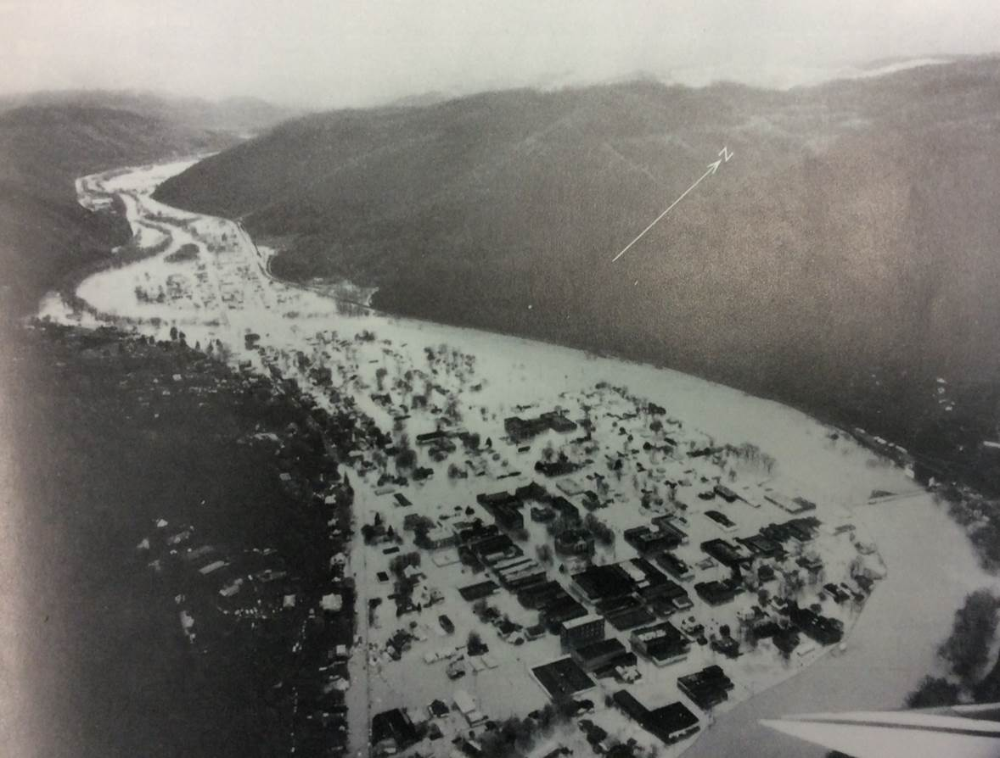

Gem City
The City Below The Rock
Caption for Mapbox map Enlarge map
The Goal of this page is to highlight some of the important stories and history about the small town.
The City of Pineville in Bell County Kentucky sits between the Cumberland River and Pine Mountain. Pineville once known as Cumberland Ford, the place where pioneer travelers crossed the Cumberland river, has a lot of history for such a small town (Friends of Boone Trace, Inc.).
On April 4th, 1977 the City of Pineville went underwater. The water exceeded the floodwall that had been built in 1952 the flood demolished 117 businesses and many homes. After the 1977 flood, floodgates were installed and the floodwall was upgraded. Since the upgrade the gates have only been partly closed once on Febuary 6, 2020. Only one side was closed to monitor the river and so the city would not have to completely shut down the road and stop traffic. (wymt)
Link to Flood of 1977 youtube video created by: NoRegretsProd Play Video
 Credit: National Weather Service Credit: wymt.com
Credit: wymt.com
One story that goes back as far as the 1930's is the tell of Chain Rock. The people told the tall tale of the dangerous rock that would fall and crush the city if a chain had not been put up to hold the rock in place. The story spread and a group of 50 men decided to actually put a chain up. It was 101 feet long.
Link to more information about Chain Rock by: FOX 56 News Play Video
 Credit: Allie Robinson
This map shows the height of the mountain from the base to the top. The link shows a birds eye view of the mountain as well as the city.
Credit: Allie Robinson
This map shows the height of the mountain from the base to the top. The link shows a birds eye view of the mountain as well as the city.

Link to Pineville at the base of Pine Mountain animation
An important historical event for Pineville is the Kentucky Mountain Laurel Festival. The KMLF started in 1931 and will celebrate its 92th year in May, 2022 during Memorial Day weekend. It is the longest running festival in Kentucky.
Credit: Jay Compton Credit: KMLF Facebook
To create these maps I used ArcGIS Pro 2.9.0, MapBox, Jupyter Notebook and Python. I found content including pictures and videos from local news stations and local residents/websites. I also researched for the details of the events that I could not remember.
About the Author
Hey Yall, My name is Reece Foley and I am from this beautiful city, Pineville Kentucky. Though it is small it holds a lot. I have made the hike to Chain Rock many of times and I was there is 2020 standing on the side of the road watching the floodgate halfway close. I have been in the KMLF Miniature Court as one of the first graders sitting in front of the pond, been the assistant chair of the festival for 2 years and this year (2022) I will be helping with the Miniature Court. This town has brought me so many memories, from Elementry school up through graduation, always cheering on the Mountian Lions. I will always remember and hold these memories close until I one day return.